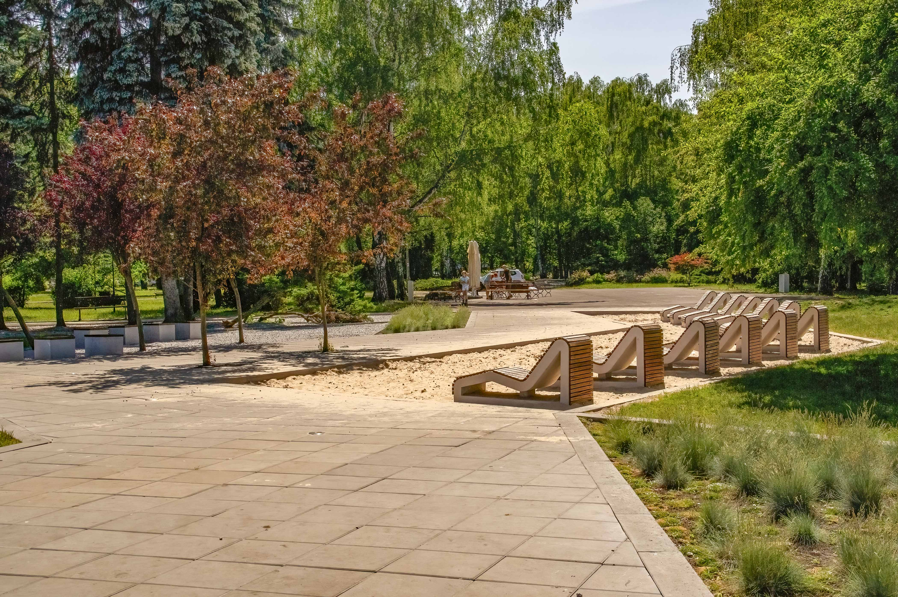
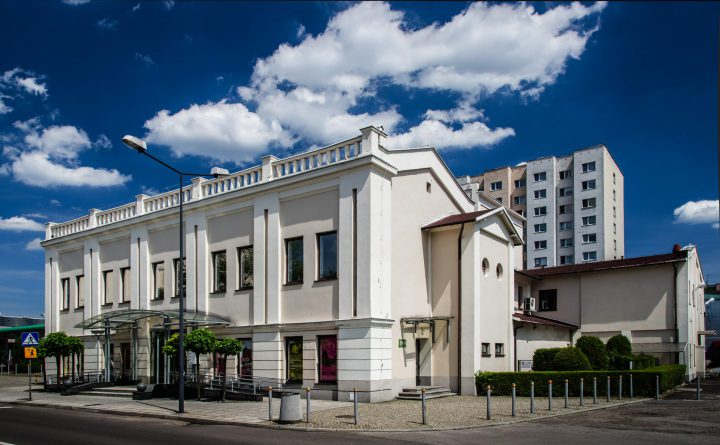
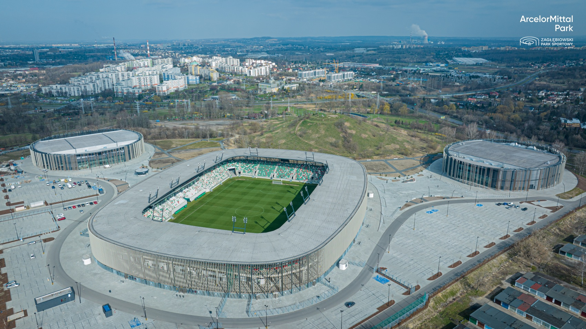

Sielecki Park is a great place to spend sunny weekend days walking or resting

Zagłębiowski Teatr is the best place for watching performances on stage

Zagłębiowski Park Sportowy is one of the best stadiums in Silesia. A modern stadium known for football matches, located near a hill where you can go skiing in winter.
"I have lived in Sosnowiec for over 20 years, so I can show you all of its best parts and hidden secrets."